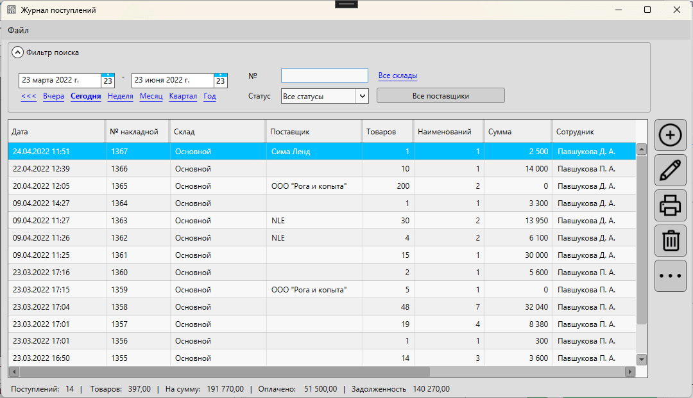
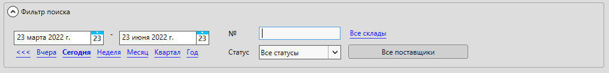
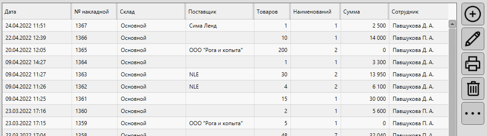

Журнал поступлений содержит в себе перечень документов с типом "входящая накладная" и позволяет выполнять операции с такими документами:
- фильтрация
- добавление
- редактирование
- удаление
- печатать документов
- и другие доступные операции.
Открыть форму можно из главной формы: Документы – Журнал поступлений

Информация
Доступ к списку групп контактов, а так же отдельные действия с записями могут быть ограничены правами доступа.
Видео-урок
Меню формы
Описание пунктов меню журнала поступлений
Файл
Сохранить как… – позволяет сохранить список накладных в документ формата CSV\Excel
Связанные материалы
Блок "Фильтр поиска"
В блоке "Фильтр поиска" можно указать параметры для фильтрации накладных по одному или нескольким значениям:
- дата поступления
- номер входящего документа
- статус накладной
- склад, на который поступили товары
- поставщик

Период
Укажите конкретную дату или период, за который хотите отобразить накладные. В результате поиска будут отображены документы, входящие в указанный промежуток дат, включая указанные.
Номер
Введите номер документа, который необходимо найти. Поиск происходит по полному совпадению указанного номера.
Т.е. если указать номер 1367, то будет найден документ именно с таким номером. Документы с номера, содержащие это сочетание (13675, 41367) не будут отображены.
Статус
Для фильтрации доступны варианты:
- Все статусы – накладные в любом из статусов
- Еще в пути – накладные, для которых остатки товаров еще не были изменены
- Принята – накладных, товары в которых уже зачислены на остаток
Выберите один из статусов для отображения накладных.
Склады
Товары при приеме накладной поступают на конкретный склад. Для фильтрации доступен выбор складов – можно выбрать один или несколько складов сразу.
Поставщики
За накладной может быть закреплен поставщик. Доступна фильтрация по всем или по одному поставщику. Нажмите на кнопку, чтобы выбрать поставщика для просмотра накладных, поступивших от него.
Связанные материалы
Список накладных
В списке отображаются те документы, которые соответствуют критериям фильтрации.

В списке можно менять порядок отображаемых столбцов и включать\отключать их отображение.
Связанные материалы
Добавить
Кнопка "Добавить" Нажмите кнопку, чтобы создать новую накладную
При нажатии откроется карточка накладной для создания нового документа.
Редактировать
Кнопка "Редактировать" Нажмите кнопку, чтобы изменить накладную
Выберите в списке документов ту накладную, которую необходимо изменить и нажмите кнопку "редактировать". Откроется карточка накладной на поступление.
Печатать
Кнопка "Печатать" Нажмите кнопку, чтобы напечатать документ
Нажмите кнопку "печатать" – программа отобразит меню выбора документа для печати.
- Накладная – программа предложит выбрать шаблон для печати документа, например, ТОРГ-12 или обычную товарную накладную.
- Ценники – откроется окно с перечнем товаров из выбранного документа для печати ценников
- Этикетки – откроется список товаров для выбранного документа для печати этикеток
При печати ценников для каждого товара в списке количество будет установлено равным 1 шт. Т.е. для каждого наименования печатается 1 ценник.
При печати этикеток для каждого наименования будет установлено то кол-во, которое указано в накладной.
Полезно
Для печати ценников и этикеток можно выбрать сразу несколько накладных и отправить на печать одним списком. Зажмите Ctrl при выборе накладных, чтобы выбрать несколько записей.
Полезное видео
Удалить
Кнопка "Удалить" Нажмите кнопку, чтобы удалить документ
Выберите в списке документов одну или несколько записей, чтобы удалить их.
Важно
Удаление накладных повлечет за собой изменение остатков товаров, входящих в них. Если товары, поступившие в рамках удаляемой накладной, были проданы, то их остатки могут уйти в минус. Важно понимать, что прибыль на товары, проданные из удаленной накладной, будет равна 100%, т.к. закупочная цена из удаленной накладной НЕ используется в расчетах.
Если удаляемая накладная находилась в статусе "Принята", то для всех товаров, которые поступали в рамках этой накладной, количество будет уменьшено на поступившее.
Если удаляемая накладная находилась в статусе "Еще в пути", то остатки не будут изменены.
Еще
Кнопка "Еще" Нажмите кнопку, чтобы выбрать дополнительное действие для выбранного документа
При нажатии на кнопку будет отображено меню для выбора дополнительного действия с выбранным документом.
- Групповое редактирование – будет отображен список товаров, входящий в выбранные документы, для проведения группового редактирования
- Создание перемещения – будет отображена карточка перемещения товаров между торговыми точками с товарами, входящими в выбранную накладную
Полезно
Для группового редактирования можно выбрать сразу несколько накладных. Зажмите Ctrl, выбирая накладные, чтобы выделить несколько.
Связанные материалы
Блок итогов
В блоке итогов отображается суммарная информация по документам, отображаемым в списке.
- Поступлений – количество накладных в списке
- Товаров – кол-во товаров, подступивших в отображаемых накладных
- На сумму – сумма по всем накладным в списке по закупочным ценам
- Оплачено – сумма оплаты поставщикам по документам в списке
- Задолженность – общая сумма задолженности перед поставщиками по накладным в списке